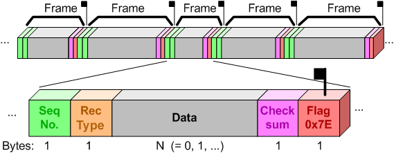

QTools
7.4.0
Collection of Host-Based Tools
One of the greatest strengths of the QP/Spy™ tracing system is the data transmission protocol. The QP/Spy protocol is very lightweight, but contains the mechanisms for checking both data integrity and continuity.
The QP/Spy™ data protocol has many elements of the High Level Data Link Control (HDLC) protocol defined by the International Standards Organization (ISO). The QP/Spy protocol has been specifically designed to simplify the data management overhead in the target, yet to allow detection of any data dropouts due to trace buffer overruns. The protocol not only has provisions for detecting gaps in the data and other errors, but it allows for instantaneous re-synchronization after any buffering or transmission error to minimize loss of useful data.

The QS protocol transmits each trace record in an HDLC-like frame. The upper part of the figure above shows the serial data stream transmitted from the target containing frames of different lengths. The bottom part of the figure above shows the details of a single frame:
01111110 binary string (0x7E hexadecimal). Please note that the QP/Spy protocol uses only one HDLC Flag at the end of each frame and no HDLC Flag at the beginning of a frame. In other words, only one Flag is inserted between frames.The QS target component performs the HDLC-like framing described above at the time the bytes are inserted into the circular trace buffer. This means that the data in the buffer is already cleanly divided into frames and can be transmitted in any chunks, typically not aligned with the frame boundaries.
One of the most important characteristics of HDLC-type protocols is establishing very easily identifiable frames in the serial data stream. Any receiver of such a protocol can instantaneously synchronize to the frame boundary by simply finding the Flag byte. This is because the special Flag byte can never occur within the content of a frame. To avoid confusing unintentional Flag bytes that can naturally occur in the data stream with an intentionally sent Flag, HDLC uses a technique known as transparency (a.k.a. byte-stuffing or escaping) to make the Flag bytes transparent during the transmission. Whenever the transmitter encounters a Flag byte in the data, it inserts a two-byte escape sequence to the output stream. The first byte is the Escape byte, defined as binary 01111101 (hexadecimal 0x7D). The second byte is the original byte XOR-ed with 0x20.
Of course, now the Escape byte itself must also be transparent to avoid interpreting an unintentional Escape byte as the two-byte escape sequence. The procedure of escaping the Escape byte is identical to that of escaping the Flag byte.
The transparency of the Flag and Escape bytes complicates slightly the computation of the Checksum. The transmitter computes the Checksum over the Frame Sequence Number, the Record-Type, and all Data bytes before performing any "byte-stuffing". The receiver must apply the exact reversed procedure of performing the "byte-un-stuffing" before computing the Checksum.
An example may make this clearer. Suppose that the following trace record needs to be inserted into the trace buffer (the transparent bytes are shown in in code format):
Record-Type = 0x7D, Record Data = 0x7D 0x08 0x01
Assuming that the current Frame Sequence Number is, say 0x7E, the Checksum will be computed over the following bytes:
Checksum == (uint8_t)(~(0x7E + 0x7D + 0x7D + 0x08 + 0x01)) == 0x7E
and the actual frame inserted into the QS trace buffer will be as follows:
0x7D 0x5E 0x7D 0x5D 0x7D 0x5D 0x08 0x01 0x7D 0x5E 0x7E
In addition to the HDLC-like framing, the QS transmission protocol specifies the endianness of the data to be little-endian. All multi-byte data elements, such as 16-, 32-, or 64-bit integers, pointers, and floating point numbers are inserted into the QS trace buffer in the little-endian byte order (least-significant byte first). The QS data inserting macros place the data in the trace buffer in a platform-neutral manner, meaning that the data is inserted into the buffer in the little-endian order regardless of the endianness of the CPU. Also, the data-inserting macros copy the data to the buffer one byte at a time, thus avoiding any potential data misalignment problems. Many embedded CPUs, such as ARM, require certain alignment of 16-, 32-, or 64-bit quantities.
The QS Trace Buffers (transmit QS buffer and receive QS-RX buffer) store only complete HDLC frames, which is the pivotal point in the design of the QS target component and has two important consequences.
First, the use of HDLC frames in the buffers enables the last is best tracing policy. The QS transmission protocol maintains both the Frame Sequence Number and the Checksum over each trace record, which means that any data corruption caused by overrunning the old data with the new data can be always reliably detected. Therefore, the new trace data is simply inserted into the circular trace buffers, regardless if it perhaps overwrites the old data that hasn't been sent out yet, or is in the process of being sent. The burden of detecting any data corruption is placed on the QSPY host component. When you start missing frames (which the host component easily detects by discontinuities in the Frame Sequence Number), you have several options. You can apply some additional filtering, increase the size of the buffer, or improve the data transfer throughput.
Second, the use of HDLC-formatted data in the trace buffers allows decoupling data insertion into the trace buffers from data removal out of the trace buffers. You can simply remove the data in whichever chunks you like, without any consideration for frame boundaries. You can employ just about any available physical data link available on the target for transferring the trace data from the target to the host.